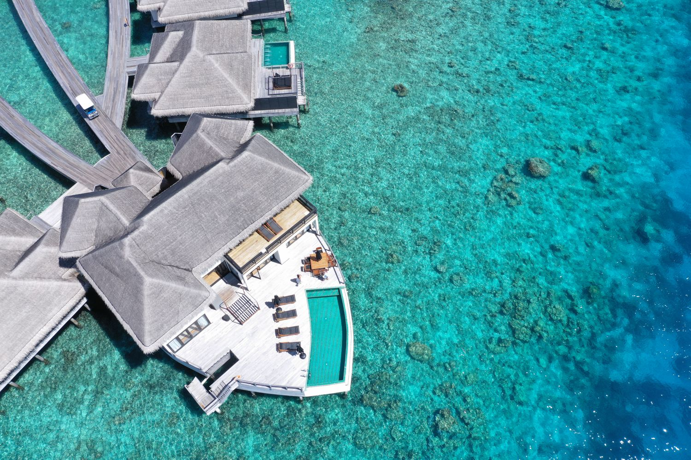

Indian Ocean / Island escapes
The Maldives
Your own rhythm.
Your own island time.
Wake to open water and a day without a deadline. Think barefoot mornings, long lunches and the kind of quiet that makes room for what matters.
Start with the feeling you want from your island escape. We’ll help shape the stay, the connections and the experiences around your preferences.
Make this journey yours ↗A starting point, not a fixed itinerary
A little further from everything.
- 01
Slow island mornings
Space for a sunrise swim, a book by the water and nowhere else you need to be.
- 02
A stay that feels like you
An overwater retreat or a beachside hideaway, selected to suit your style and budget.
- 03
Time together
A honeymoon, an anniversary or simply a chance to reconnect — with a little extra thought in the details.
Let’s begin with you
Your The Maldives escape.
Entirely personal.
Start your journey brief ↗These ideas are inspiration, not confirmed packages. Accommodation, experiences and travel arrangements depend on your brief, availability and final agreement.